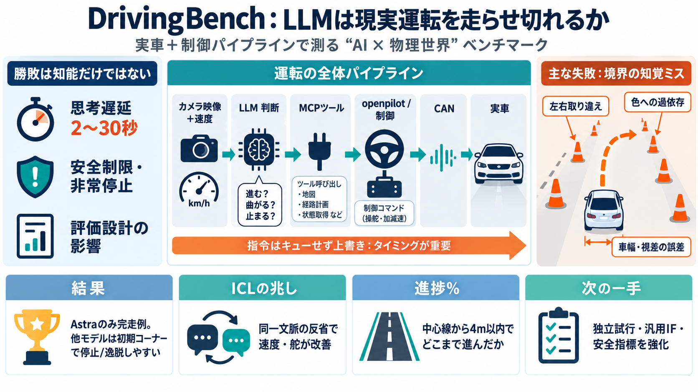

Report · DrivingBench
Frontier models have improved to the point where they can drive real vehicles in real life at sufficiently low speeds. W…

LLMが“現実世界”で車を走らせ切れるかを、実車（2022 Toyota Corolla）と制御パイプラインまで含めて測る。
成否は「LLMの推論力」だけでなく、遅延・再試行・安全プロトコル・評価設計の影響を強く受ける。
LLMは直接ハンドルを握らず、MCPツールで運転コマンドを生成し、openpilot系（comma four）を通じてCANバスへ反映される。
LLMは“運転の指示”を出す役で、実走はopenpilot/制御スタックが担当するため、指揮と奏者の噛み合いで結果が決まる。
提示された複数モデルのうち、GPT-6 Astraのみがコースを完走し、他モデルは最初のコーナー以前で失敗するケースが多い。
失敗は主に知覚・解釈の誤り：対角線上のコーン境界の左右取り違え、色への依存誤認、車幅/視差の見積もり誤差など。
AstraやFableには、同一チャット文脈の複数試行で挙動が改善する兆候（反省プロンプト後に速度/舵の扱いが改善）が記録されている。
Astraは成立しやすい一方、他モデルは初期コーナーで止まりやすい。差は主に知覚→指令化のズレと、タイミング依存の連鎖にある。
進捗%は、中心線に対して4m以内に留まりながら、中心線のどれだけ先へ到達したかで計算される（単なる走行距離ではない）。
車種・コース設営・機材条件が揃わないと再現が難しく、試行の独立性も完全ではないため、結果の一般化には慎重さが要る。
実車運転が“ある程度可能”になったのは重要だが、次は評価の独立性・インタフェース汎用性・セーフティの定量化を強化すべきだ。
本デッキは、ユーザー提示のDrivingBench概要（実車条件、MCP/openpilot/can、進捗%定義、失敗理由、再現性の限界、議論）を要約している。
Frontier models have improved to the point where they can drive real vehicles in real life at sufficiently low speeds. W…
| Model | Size | Type | Weather | External | Sensor | Motion | Transmission | --- --- --- --- | | MCQ | VQA | CAP | …
Textual Scene Description Generation. To transform abstract rules into perceptible driving contexts, we first em-ploy LL…
When used correctly, these features reduce your workload as a driver, and can make long drives relaxing instead of tedio…
openpilot is an operating system for robotics. Currently, it upgrades the driver assistance system on 300+ supported car…